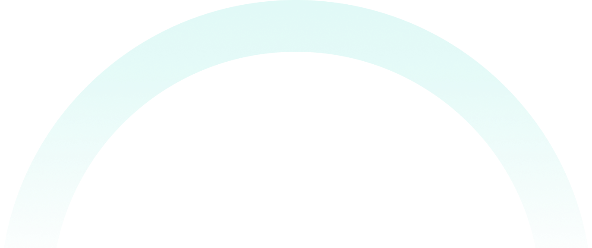
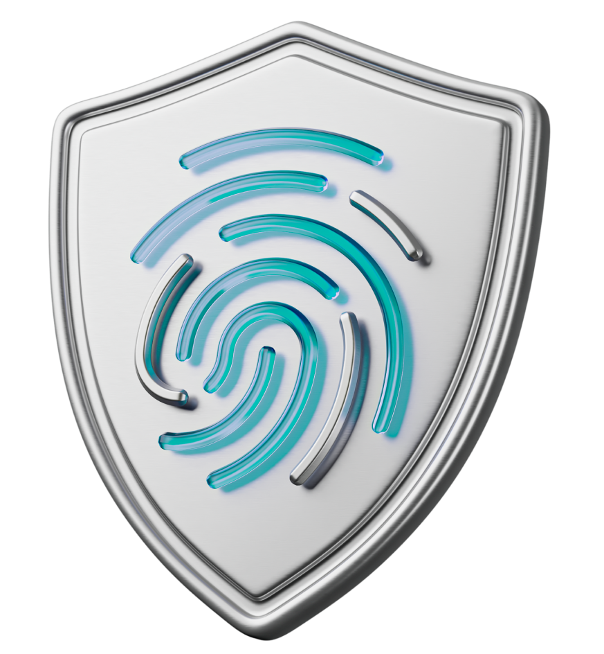
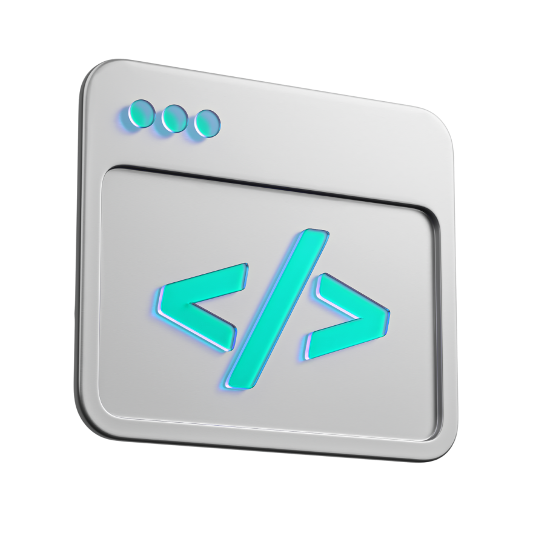
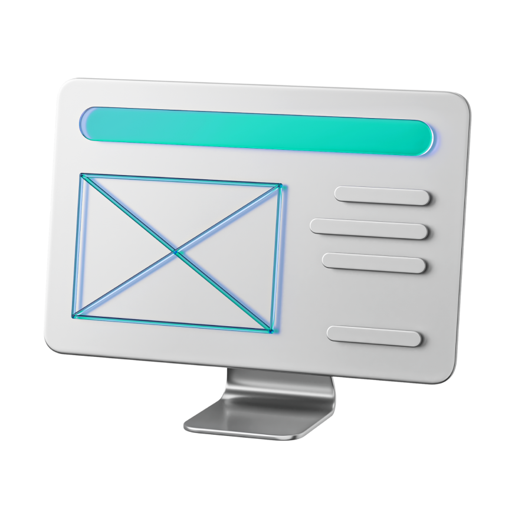

Safepad

WELCOME TO
Safemoon2.0 is a revolutionary token which fulfills every broken promise of other crypto projects and predecessors.
We introduce truly innovative security features and enhancements
that REDEFINE the DeFi landscape.
SAFEMOON
SAFEMOON2.0
Go to safepad

We introduce truly innovative security features and enhancements that
REDEFINE the DeFi landscape.
Safemoon2.0 is a revolutionary token which fulfills every broken
promise of other crypto projects and predecessors.
OUR MISSION
As leaders and developers of Safemoon2.0 - we are the pioneers of change. Together, we have the power to shape the world in a way that puts people first, where transparency and safety are paramount. We celebrate diversity through fostering a vibrant and inclusive environment. Safemoon2.0 elevates DeFi to the highest standards of honesty, fairness, and transparency. We remain committed to excellence, pushing the boundaries of what is possible. Empowering individuals, providing opportunities, and uplifting communities- we are building a legacy that will endure for generations to come.
Key enhancements
1.
Enhanced
Security
Safemoon2.0 places paramount importance on security. Through advanced smart contract auditing and rigorous security protocols, users can have increased confidence in the platform's safety.

2. Efficient
Tokenomics
With refined tokenomics, Safemoon2.0 provides a more balanced and sustainable ecosystem than any other DeFi token out there. A streamlined distribution model, reduced fees, and optimized rewards - all contribute to a more user-friendly experience.3. Liquidity
Management
Safemoon2.0 introduces improved liquidity mechanisms TO ENHANCE price stability, completely reducing the risk of extreme volatility often associated with DeFi projects.Advanced
Governance
Community-driven decision-making is at the heart of Safemoon 2.0. Holders of Safemoon2.0 tokens have the power to shape the project's future, participate in proposals, and collectively drive growth. The core team of Safemoon2.0 includes a dedicated, present and fully transparent and doxxed development team which has the passion, the drive and the capability to create innovative applications and propel the Safemoon2.0 project.4.

5. Cross-Chain
Compatibility
Safemoon2.0 expands its reach by incorporating cross-chain compatibility, allowing users to seamlessly interact with the platform across various blockchain networks.6. Utility and
Use Cases
Safemoon2.0 extends its utility beyond being a speculative asset. Through strategic partnerships and real-world integrations, Safemoon2.0 tokens can be utilized for a range of services, fostering adoption and value.7.
User-Centric
Experience
Safemoon2.0 prioritizes user experience, offering an intuitive interface, educational resources, and responsive customer support to ensure a smooth journey for users of all levels.
